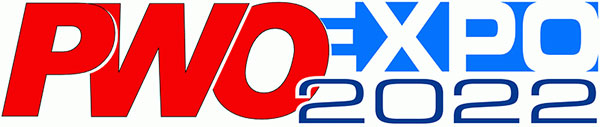
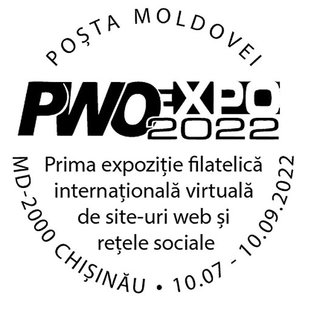
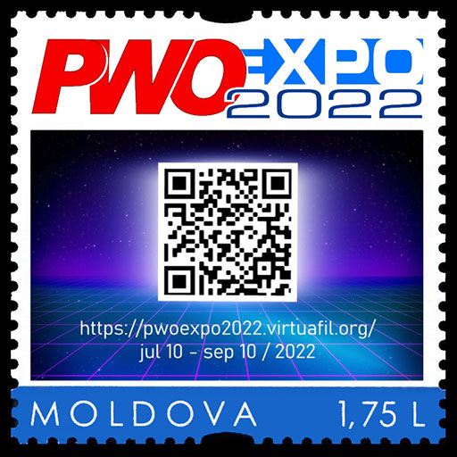
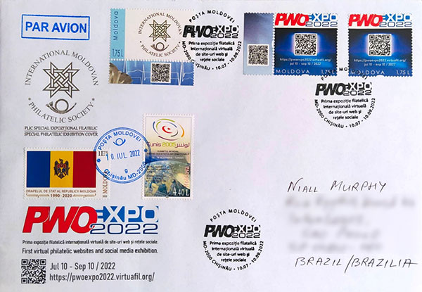

PWO-EXPO 2022 - A New Philatelic Exhibition
← Back to Websites Competitions

By Philatelic Webmasters for Philatelic Webmasters
PWO-EXPO 2022 Websites and Social Media Exhibition
(+ Comments on Two Major FIP Websites Competition of 2022)
Victor Manta, PWO President
The PWO-EXPO 2022 Open Virtual Philatelic Websites and Social Media Competition is on and running. After the closing of participants registration on the 9 July 2022 it counts 72 exhibits from 50 participants, representing 22 countries worldwide. This large participation (source) in a first time competition, that is the contribution of a number of philatelic enthusiasts, can be already considered as an important success.
Update. As of July 23, we have over 2,000 votes cast in the public/popular voting. Astonishing!The visitors of the exhibition/competition are warmly invited to vote till 10 September 2022 for their favorite exhibits on the webpage Exhibits Gallery. The winners of first three places of the popular voting will be rewarded by the Trophies shown on this webpage.
We are proud to mention that the Universal Postal Union member Moldova Post has issues a special cancellation dedicated to the PWO-EXPO 2022 competition, shown below:

Postmark: First international virtual international competition of websites and social networksThis postmark is announced on the Moldova Post site, under the title (translated from Romanian): Special postal postmark/cancellation "First international virtual international competition of websites and social networks".
A personalized Moldova post stamp, related to the exhibition, is displayed below. The QR code on the stamps allows for the direct access from a smartphone to the exhibition website (give it a try!).

A special cover, limited to only 10 pieces, was composed by the PWO Creative Director, to whom the first of covers (see below) was sent. It is worth mentioning that Niall Murphy from Brazil is the author of the Virtuaphil platform, of the PWO-EXPO 2022 website, of the above stamp and of the special postmark. Thank you, Niall!

Bad Experiences in Two Major 2022 FIP Websites Competition
Capex 2022, Toronto, Canada
"The participation fee of the CAPEX 2022 was the most expensive (USD 110 / €102) I paid so far. For London 2022 I paid €50 (everything included). ... To my big disappointment, the score split and feedback from the jury were not provided. Really pity, as the score itself doesn't allow to draw any conclusion how to improve the website for the next competition. ...
"At every international exhibition for which a German commissioner is requested and appointed by the BDPh, a commissioner's fee is due according to the BDPh (German Federation - t.n.) fee schedule - this is of course not in the IREX." Email from the German FIP Commissioner.
London 2022, UK
It seems as from ~350 exhibits in the literature class only 2-3 dozen were websites.
All websites that received high score are websites of big organizations.
The website that received the best score and Large Gold medal is "The Great Britain Philatelic Society", who is the organizer of the show."
Michael Kogan, Germany. PWO member. Sources: private email, link.
London 2022, UK
"Dear Exhibitors,
I am aware that I still need to send you a London2022 Medal or Show Program, or both. The 60-pound carton of Medals and Programs originally shipped to me has not been received." June 8, 2022. Jack Harwood, USA Commissioner. Notes: The exhibition closed on Feb. 26, 2022. Its website is empty and "in the process of being close down." The links to participants' exhibits, mine included, are therefore forever lost..."The Jury did not provide written analysis of any exhibits. The only thing which is available are the scores for various sections. The only way to obtain any feedback would have been to attend the jury critique in London. ... More than a few exhibitors were not happy with this arrangement." Email of March 26, 2022 from Jack Harwood, USA Commissioner.
I, Victor Manta, paid $35 as participation fees and $25 for the commissioner. When I tried to pay only the participation fee, as it is foreseen by the IREX, the commissioner returned it and asked me to include his fee, what I nolens volens did... The good question now is, what did I get in return?
Conclusion
Compare the dealing of the FIP approved representatives, described above, with the PWO-EXPO 2022 regulations (NO fees, NO national commissioners) and draw for the future the obvious conclusions. I drew my own by actively participating in the creation of the PWO-EXPO 2022.
| Created:
July 11, 2022. Revised:
July 23, 2022 |